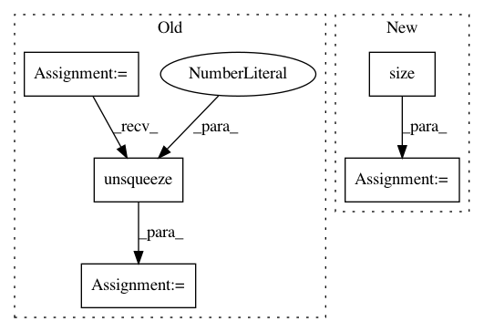

1f0750670cf8ea24ad264debf9603002ab0fb565,torch_geometric/nn/pool/mem_pool.py,MemPool,forward,#MemPool#Any#Any#,77
Before Change
B = x.shape[0]
H = self.heads
K = self.num_keys
N = x.shape[1]
dist = torch.cdist(self.k.view(H * K, -1), x.view(B * N, -1), 1)
dist = (1 + (dist**2 / self.tau)).pow(-(self.tau + 1) / 2.0)
dist = dist.view(H, K, B, N).permute(2, 0, 3, 1)
S = dist / dist.sum(3).unsqueeze(3) // B*H*N*K
S = self.conv(S).squeeze(1)
S = torch.softmax(S, 2) // B*N*K
S = self.apply_mask(S, mask)
x = self.lin(matmul(S.transpose(1, 2), x)) // B*K*F"
x = self.act(x)
After Change
x, mask = to_dense_batch(x, batch)
(B, N, _), H, K = x.size(), self.heads, self.num_clusters
dist = torch.cdist(self.k.view(H * K, -1), x.view(B * N, -1), p=2)**2
dist = (1. + dist / self.tau).pow(-(self.tau + 1.0) / 2.0)
In pattern: SUPERPATTERN
Frequency: 4
Non-data size: 5
Instances
Project Name: rusty1s/pytorch_geometric
Commit Name: 1f0750670cf8ea24ad264debf9603002ab0fb565
Time: 2021-03-15
Author: matthias.fey@tu-dortmund.de
File Name: torch_geometric/nn/pool/mem_pool.py
Class Name: MemPool
Method Name: forward
Project Name: ixaxaar/pytorch-dnc
Commit Name: a6667bf98c59a7447a6bc55869459e83f5bdb603
Time: 2017-12-07
Author: root@ixaxaar.in
File Name: dnc/sparse_memory.py
Class Name: SparseMemory
Method Name: read_from_sparse_memory
Project Name: ruotianluo/self-critical.pytorch
Commit Name: c8fadd2d970f1c62ae8a842464056263f8d1232f
Time: 2017-02-13
Author: rluo@ttic.edu
File Name: resnet.py
Class Name: myResnet
Method Name: forward